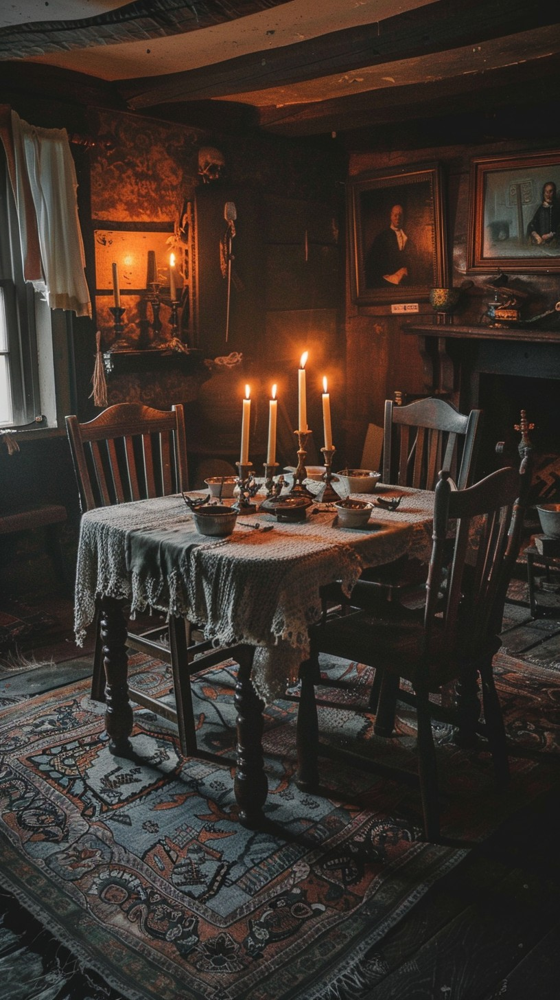
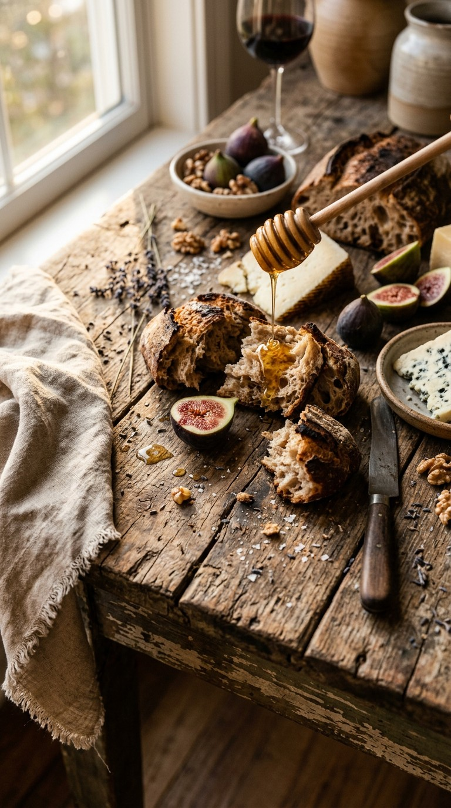
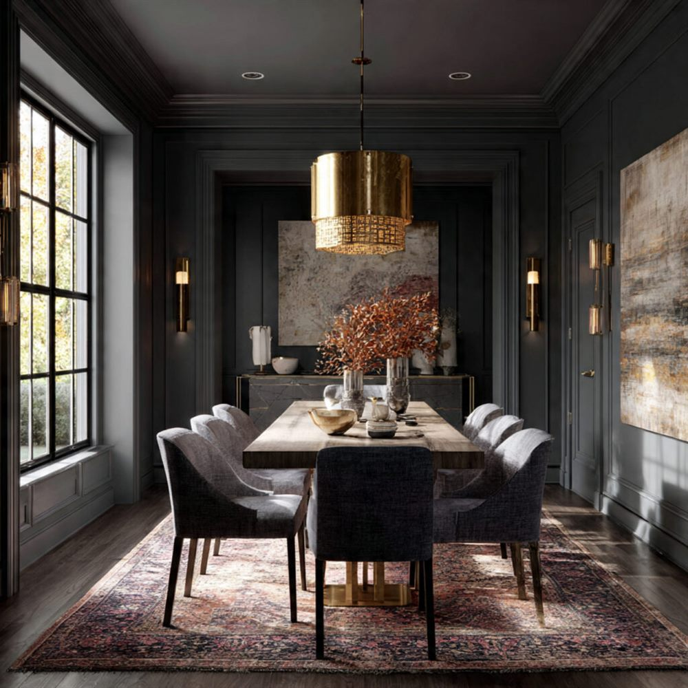
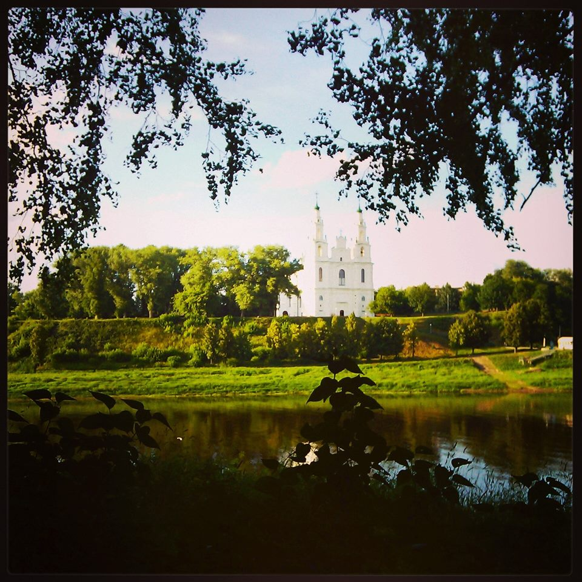
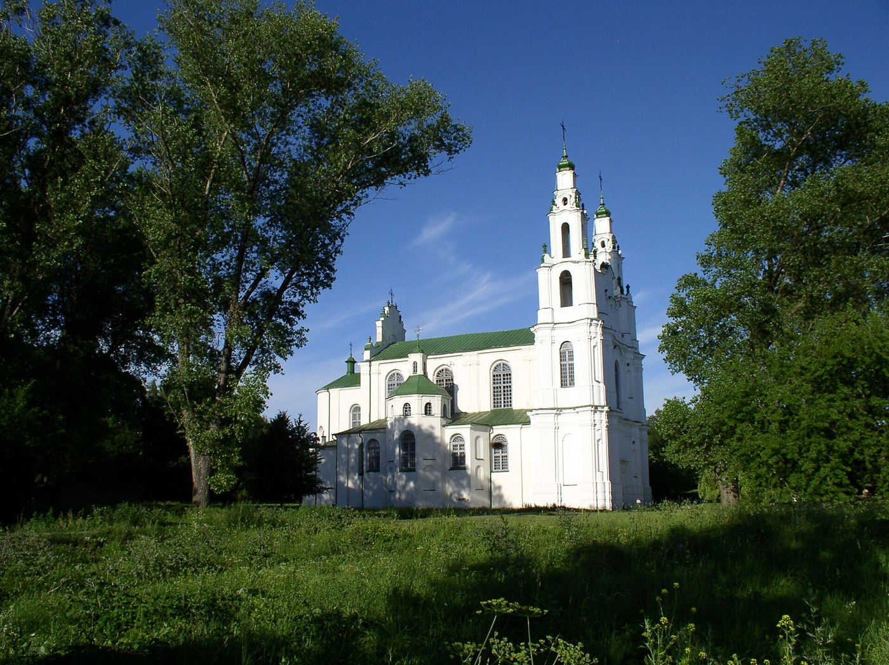

Полоцк · Беларусь · белорусская кухня
Тёплый свет, деревянные столы и домашняя кухня, которую помнишь с детства. Место, куда приходят не поесть, а побыть.

01 — Атмосфера
«Старый Полоцк» — из тех кафе, куда заходишь погреться, а остаёшься на весь вечер. Здесь нет нарочитого лоска: только дерево, свечи, запах домашней кухни и разговоры, которые не хочется заканчивать.
Уютным место делают не вещи, а детали — и здесь они собраны бережно: тёплый свет над столами, простая честная еда, тишина, в которой слышно, как за окном проходит старый город.
Очень уютно и атмосферно — впечатление гостя, ради которого всё и затевалось.

03 — Галерея


Фотографии на странице — временные референсы из открытых источников. После фотосъёмки заведения они заменяются оригинальными кадрами «Старого Полоцка» без изменения вёрстки.
Интерлюдия — город
Кафе носит имя города, которому больше одиннадцати веков, — и это не случайность, а характер.

04 — Поводы
Готовая витрина для афиши кафе: сезонные предложения, тёплые вечера и новости кухни появятся здесь по мере наполнения. Вопросы о возможностях зала — по телефону.
05 — Контакты
Номер указан по данным открытой карточки заведения.
Кафе находится в самом городе — до Софийского собора и Набережной руки подать.